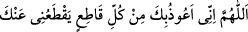

Burada geçen kınama (inkâr) ise, hem kayd ve hem de mukayyedin tümüne bir anda
vâriddir. Çünkü hanımlarının rızâsını gözetmek ve haram kılma fiillerinin tamamı hoş
olmayan münker fiillerdir. Buradaki ifâde, Allah’ın şu âyet-i kerimesindeki ifâdesine
benzemektedir: “Ey îmân edenler kat kat arttırılmış olarak faiz yemeyin.” (Âl-i
İmrân, 3/130)
Bu âyet-i kerîmede Hz. Mâriye’nin fazîletine ve balın üstünlüğüne işâret vardır. Bir
hadis-i şerifte şöyle ifâde olunur: “Yeryüzünden kaldırılacak olan ilk nimet
baldır.”[205] Nitekim Nahl suresinde bu gerçek beyân olunmuştu.
“Allah çok bağışlayandır” Seni bağışlamış, nefsine haram kılma fiilini ve eşlerinin
hoşnutluğunu gözetme hareketini örtmüştür. Çünkü Kerîm olan Mevlâ’nın ihsânından
yararlanmama ve bundan kaçınma Allah Teâlâ’nın ihsânını kabûl etmemeye benzer.
“…bağışlamada çok ileri gidendir.” Çünkü sana merhamet eylemiştir. Seni bu
hareketinden dolayı hesaba çekmemiştir. Seni azarlamasının sebebi ise, senin ismet
sıfatını muhâfaza etmek istemesidir.
Kâşifî demiştir ki: Senin yeminin için keffâret buyuran Allah merhametlidir.
Keşfü’l-esrâr’da denir ki: Bu âyet, Kur’an-ı Kerim’de Peygamber Efendimiz’in
azarlandığı ve itâba uğradığı en şiddetli âyettir.
(Rûzbihân) Baklî der ki: Allah Teâlâ peygamberini kendi görüşüyle hareket etmeyip
kendisine vahyedilene uyması noktasında uyarmıştır. Nitekim bazı meşâyıh “Allah’ın
sana gösterdiği şekilde insanlar arasında hükmedesin diye sana kitabı hak ile
indirdik.” (en-Nisâ, 4/105) âyeti hakkında derler ki: Bu âyetle kasdedilen Peygamber
Efendimiz’in kendi görüşü değil, kendisine gelen vahiydir. Çünkü Allah Peygamber
Efendimiz’in Hz. Âişe ve Hz. Hafsa hâdisesinde geçen herhangi bir şeyi kendi nefsine
haram kılması dolayısıyla Peygamberini azarlamıştır. Eğer din insanın kendi görüşü
yönünde olsaydı, Peygamber Efendimiz’in görüşü bütün herkesin görüşünden daha
uygun ve üstün olurdu.
Bu âyet-i kerîmede şu beyân da bulunmaktadır: Allah’ın dışında her hangi bir şey bir
kimseyi meşgul ediyorsa o kimseye Allah’tan bir darbe ulaşır. Bu darbe sonucunda
açılan yarayı Allah Teâlâ’dan başka hiç kimse iyileştiremez. Bu nedenle âyet-i
kerîmenin sonunda Allah “Allah çok bağışlayan çok esirgeyendir.” buyurmaktadır.
İbn Atâ der ki: Bu âyet-i kerîme indiği zaman Peygamberimiz sürekli şöyle duâ
ederdi:  “Allahım beni Sana ulaşmaktan alıkoyup
engelleyen her şeyden Sana sığınırım!“[206]
İnsanlardan uzaklaşıp bir köşeye çekilen
Halktan ayrıldığı için rahatsız olur.
Oysa gafildir o kimse
Hakk’a kavuşmaktır çünkü halktan ayrılmak.